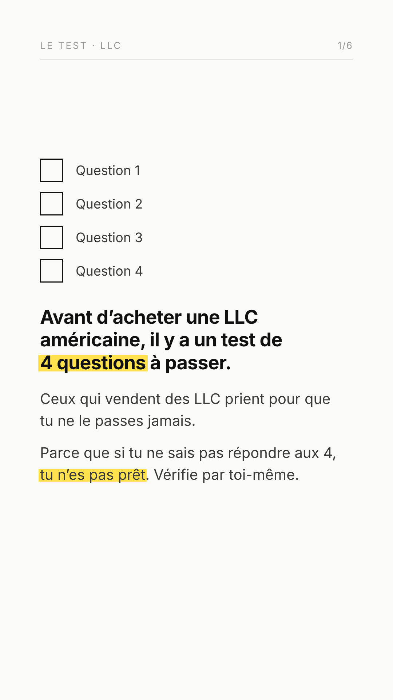
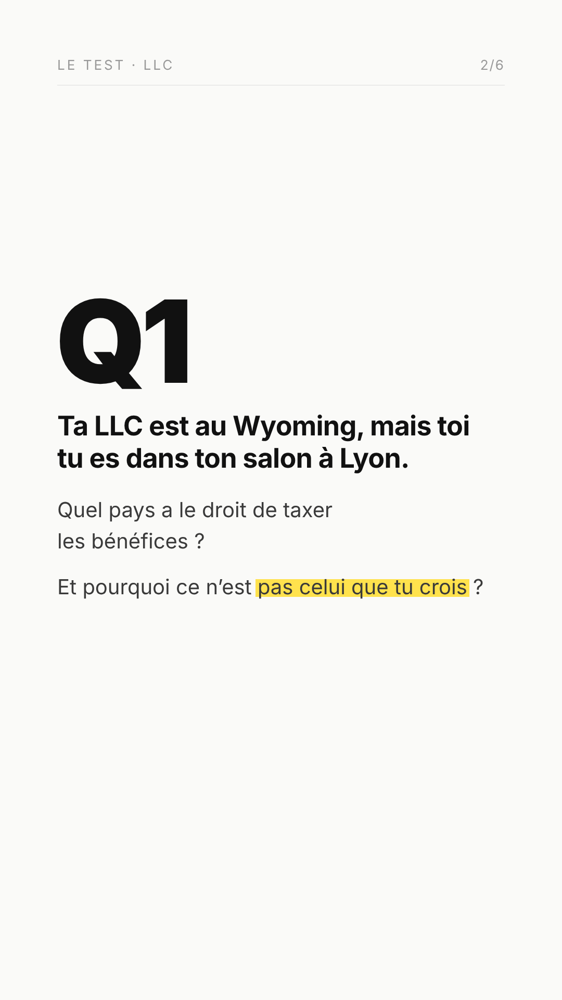
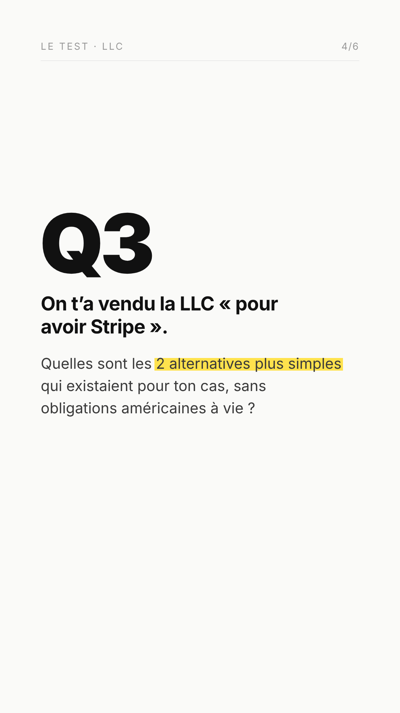
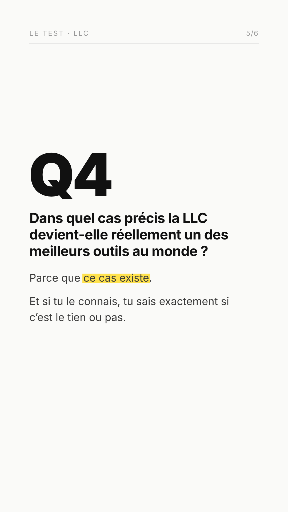

Les 6 stories dans l'ordre de publication. Le filet gris marque la ligne où commence le « Q » géant — il doit passer exactement au même endroit sur les stories 2 à 5, c'est ce qui fait l'effet de calque quand on tape. Le filet rouge marque la limite basse : 1620 px partout, 1450 px sur la story 6 où la barre de commentaire vient se poser.



